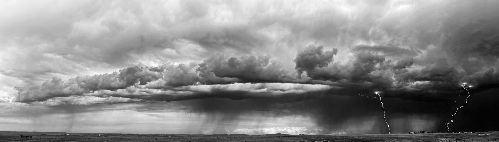

Luke A. Parsons
Associate Senior Climate Scientist, Global Science, The Nature Conservancy
Adjunct Assistant Professor, Atmospheric Sciences, University of Utah
I study how extreme heat, humidity, air pollution, and land-use change affect people's health, work, and livability. I combine climate model simulations, reanalysis and observational data, and human heat-balance models to identify where and when conditions become unsafe, and how changes like tropical deforestation alter who is exposed.
Before joining The Nature Conservancy in 2023, I was a research scientist and lecturer at Duke University and a Washington Research Foundation Postdoctoral Fellow at the University of Washington. I earned my PhD in Geosciences at the University of Arizona as an NSF Graduate Research Fellow.

Research
-
Extreme heat and livability
How hot, humid conditions limit safe outdoor work, safe use of electric fans, and livability for younger and older adults, now and with further warming.
-
Forests, land use, and heat
How tropical deforestation raises local temperatures and reduces safe working hours, and what forests and trees mean for people adapting to a hotter climate.
-
Air pollution and health
How fine particulate pollution and emissions choices affect health and labor, and how quickly emissions reductions bring benefits.
My earlier work used climate model ensembles, paleoclimate data assimilation, and observations to study decadal climate variability and drought, from the American Southwest to the Amazon. More on this work
Current project
Climate Risk Explorer
With colleagues at The Nature Conservancy, I am leading development of a global tool that maps climate hazards together with population and social vulnerability, from national to district scales, to show where risk from climate hazards could be highest.
Selected recent publications
- A meta-analysis of carbon losses and gains from tropical moist forest degradation and regeneration
- Intensifying global heat threatens livability for younger and older adults
- More than mitigation: The role of forests in climate adaptation
- Climate change and disparities in extreme heat exposure for socially vulnerable areas in the contiguous United States
Recognition
My research received GeoHealth's 2024 Best Research Paper award and has been covered by outlets including The Guardian, Reuters, The Economist, BBC, and New Scientist.